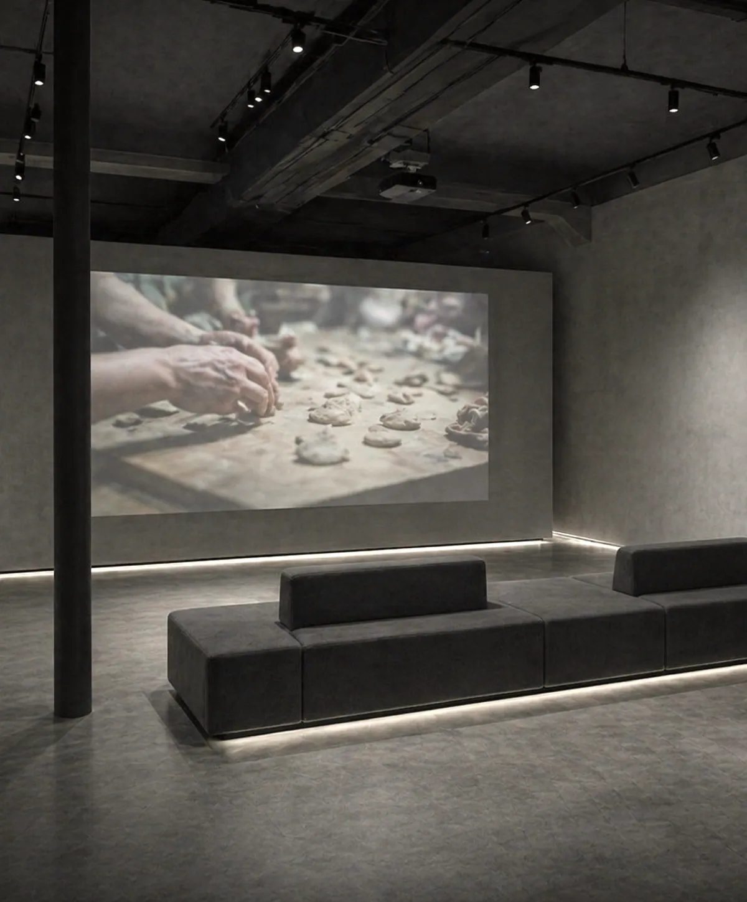
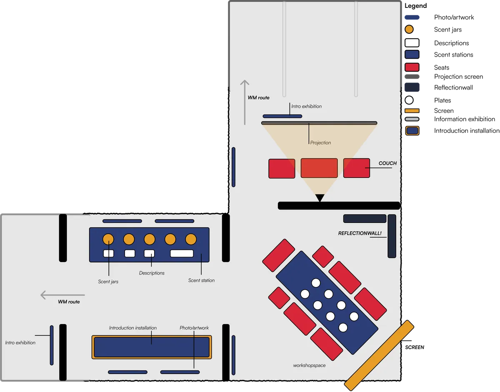
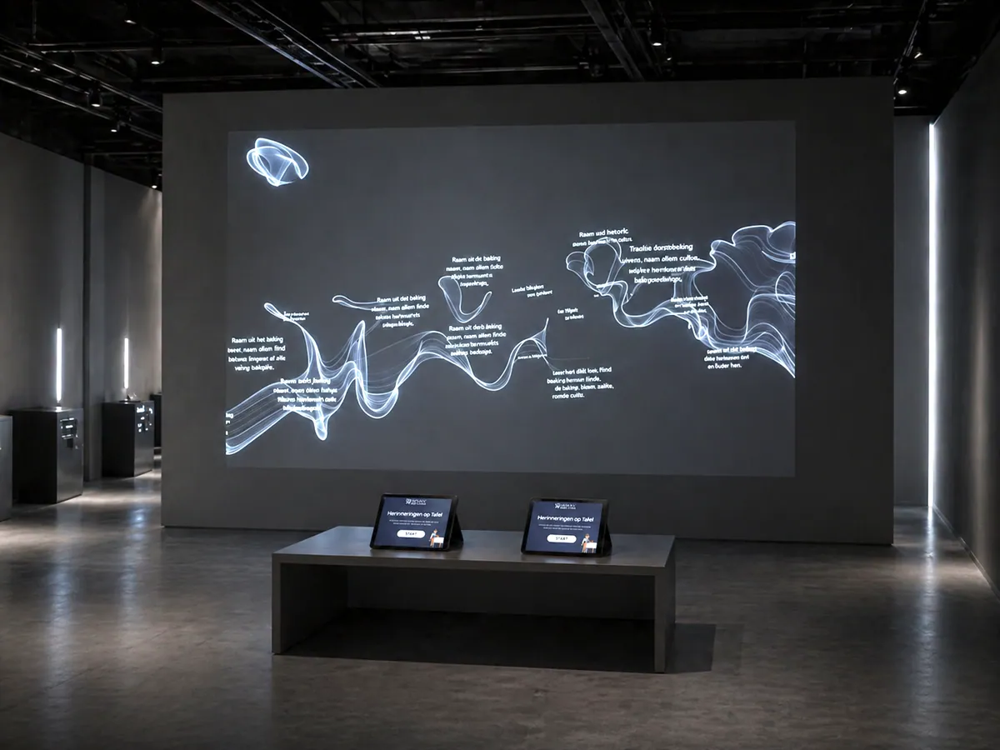
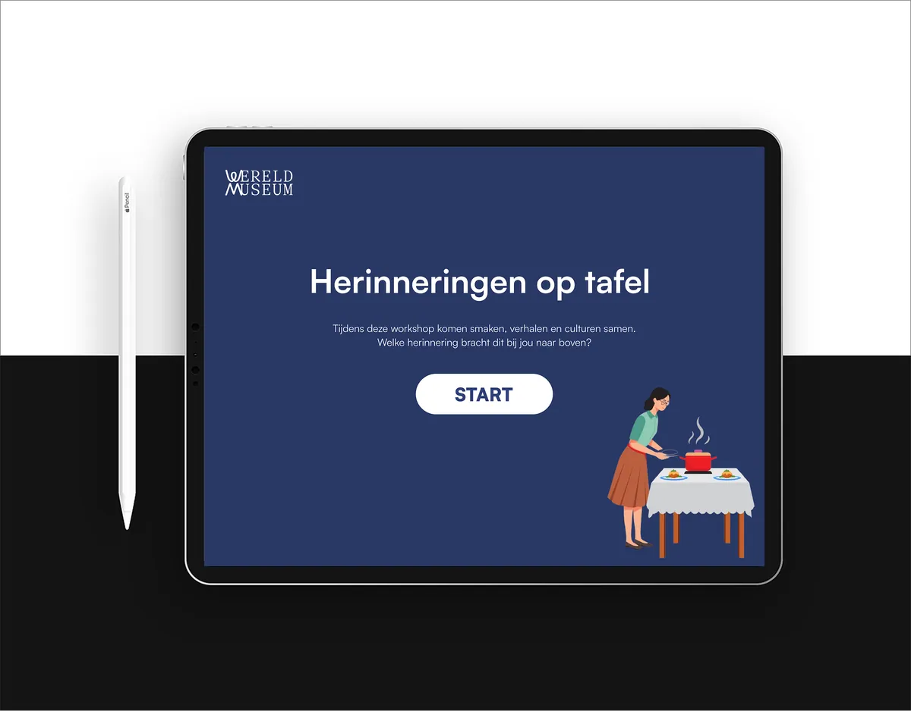
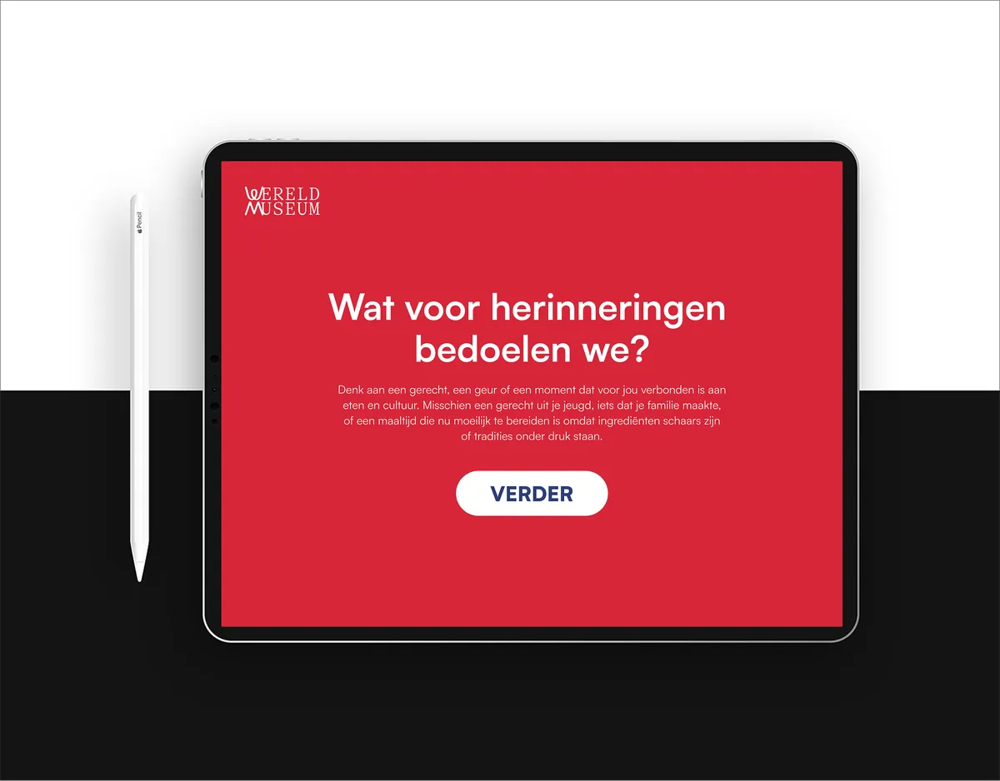
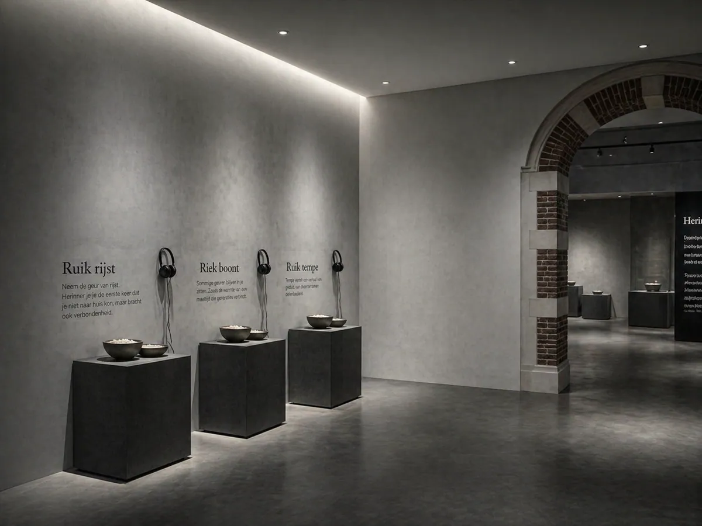
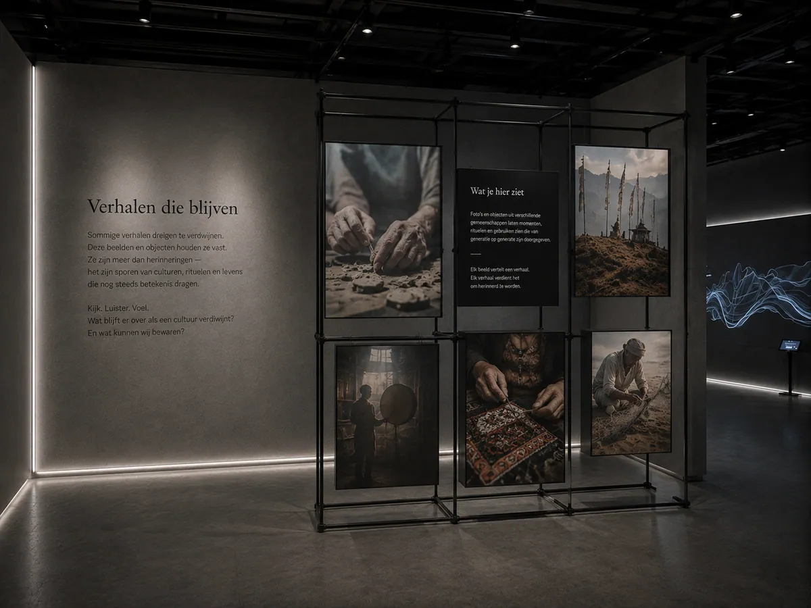

Herinnering aan Tafel Memories at the table
- No.
- 04
- Year
- 2026
- Discipline
- UX Design
- Role
- Communication design, UX research, service design
- Tools
- Figma, prototyping, research synthesis
- Outcome
- Immersive exhibition concept
- With
- Wereldmuseum Amsterdam
- Duration
- Six months
- Team
- Ayesha, Catharina & Jack

Developed over a six-month collaboration with Wereldmuseum Amsterdam, this project explores how immersive, sensory experiences can communicate stories of cultures under pressure.
Grounded in research and service design, the concept uses food as an entry point to connect visitors with personal narratives, cultural identity and collective memory.
Through a combination of storytelling, audiovisual elements and tactile interaction, the exhibition invites visitors to move beyond passive observation and engage with culture in a more embodied and reflective way.
Further reading
- View the design brief → NL · PDF
- View the product biography → NL · PDF








Looking back
This was the longest and most layered project I’ve worked on: six months, with the four of us, and the Wereldmuseum on the other side of the table. Within the team I took on communication design, and presented our content operations work.
Our turning point came from a conversation with service designer Martijn Bosman, who told us that fewer concepts with more depth would be stronger. That became our compass: food is the means, not the goal. Interviewing a researcher on food, migration and identity also made me aware of how easily a well-meant story can romanticise someone else’s culture, and why you make it together with the people whose story it is.